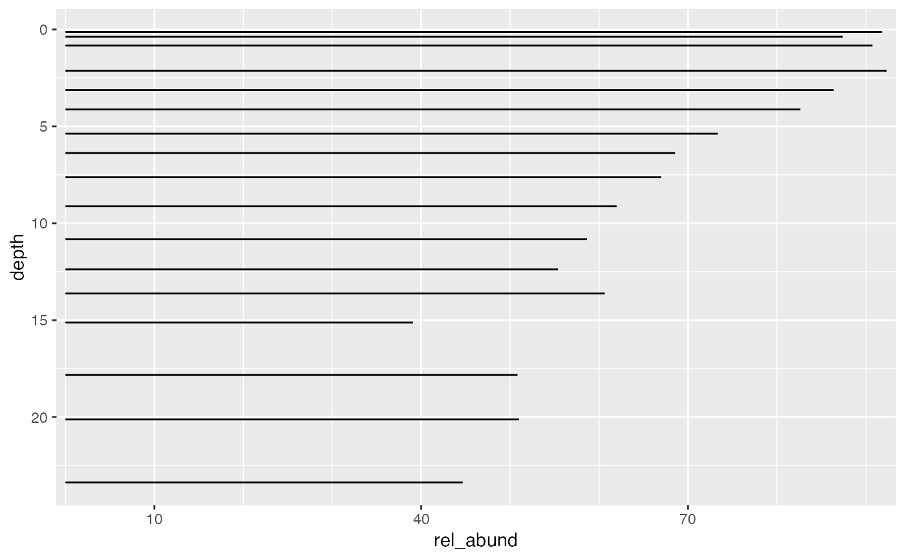

Continuous scales that (1) always start at 0, (2) always have the same breaks, and (3) expand using a constant rather than a percentage. These scales assume that data are in percentages (i.e., range 0 to 100 rather than 0 to 1).
scale_x_abundance( ..., limits = c(0, NA), breaks = seq(10, 90, 30), minor_breaks = seq(0, 100, 10), expand = c(0, 1) ) scale_y_abundance( ..., limits = c(0, NA), breaks = seq(10, 90, 30), minor_breaks = seq(0, 100, 10), expand = c(0, 1) )
| ... | Passed to scale_y_continuous or scale_x_continuous |
|---|---|
| limits | Limits for the scale |
| breaks | Where to place labels on the scale |
| minor_breaks | Where to place minor breaks |
| expand | A vector of expantion constants |
A scale_y_continuous or scale_x_continuous
library(dplyr, warn.conflicts = FALSE) library(ggplot2) keji_lakes_plottable %>% filter(taxon == "Other", location == "Beaverskin Lake") %>% ggplot(aes(rel_abund, depth)) + geom_col_segsh() + scale_x_abundance() + scale_y_reverse()